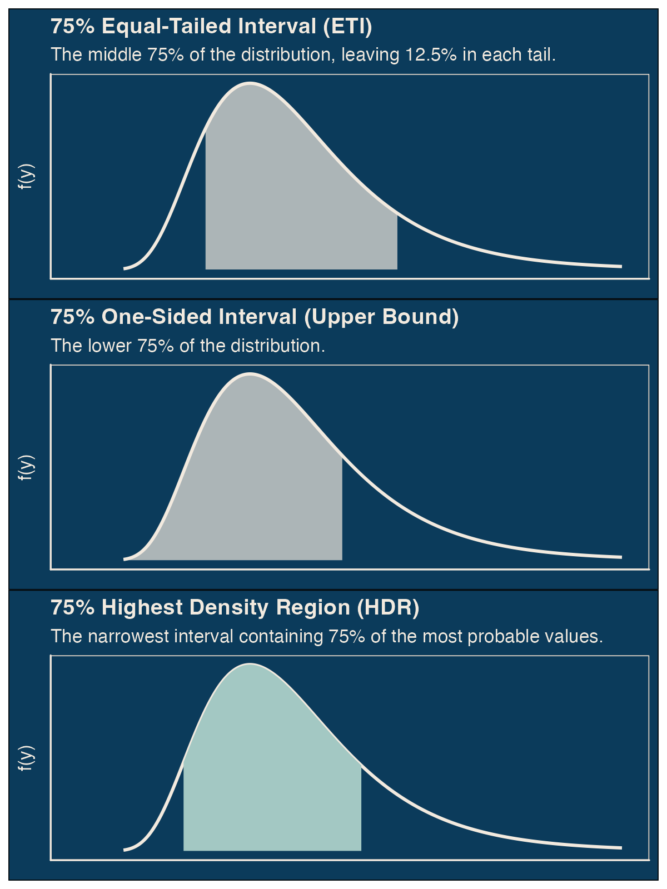
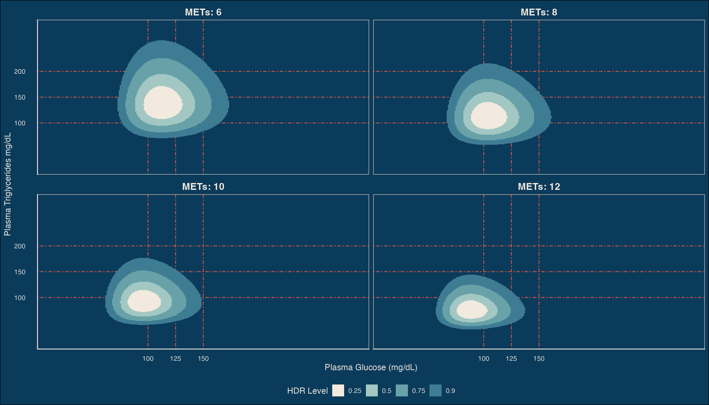
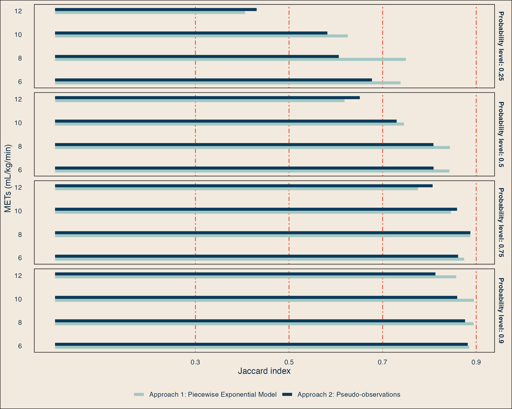

Semi-parametric estimation of conditional distributions for multivariate health outcomes
Giacomo Biganzoli
Department of Clinical and Biomedical Sciences, Univeristy of Milan
Department of Environmental Health, Harvard T.H. Chan School of Public Health
Giuseppe Marano
Department of Clinical and Biomedical Sciences, Univeristy of Milan
Joel Schwartz
Department of Environmental Health, Harvard T.H. Chan School of Public Health
Patrizia Boracchi
Department of Clinical and Biomedical Sciences, Univeristy of Milan
Presentation in bites üç™
Continuous outcomes are informative but often difficult to model with classical parametric models.
Sometimes health outcomes are multi-factorial and the interest lies in assessing the influence of exposure on their joint distribution
The probability density and the cumulative distribution functions fully describe a continuous outcome.
Flexible models that directly obtain smoothed estimates of the CDF or—indirectly—of the PDF, conditional on covariate X, exist. We can easily obtain estimates of the joint PDF and CDF with the chain rule of probability.
We need to translate complex model outputs into interpretable statements about probability mass shifts associated to X, with intervals that describe the most typical values of the conditional distribution.
1. Traditional Approach
Physical Activity (PA) (METs) Exposure and Metabolic Health (Multi-factorial) Outcome.
- Traditional Method: Model the presence/absence of Metabolic Syndrome (MSy) using logistic regression.
log(odds of MSy) = β₀ + β₁ * METs
- Limitations of this approach (Beckstead and Beckie (2010)) :
- PCA?
- Multivariate models?
2. Beyond Binary: modeling representative continuous outcomes variables (univariable)
- Common Method: Use Ordinary Least Squares (OLS) or Generalized Linear Models (GLM) to model the expected value (mean) of the outcome:
E[Glucose | METs] = β₀ + β₁ * METs - Limitation: focused on the average response. What about the entire shape of the outcome’s distribution? -> Probability density function obtained with \(\mu\) and \(\epsilon\) but Rigid assumptions about the distribution of the outcome conditional on the exposure.
3. Example: the relationship between glu and tgy and Levels of Physical Activity (METs)
The effect of PA is visualized as a shift in the probability mass described by the change in the location and the scale of the PDF of Plasma glucose and Triglycerides
4. Moving beyond location and the rigid assumptions of OLS
How does the increment of Physical Activity levels change the distribution of glucose and triglycerides?
Probability Density Function (PDF)
Cumulative Distribution Function (CDF)
The Challenge: How do we estimate the conditional PDF and CDF (the PDF/CDF of the outcome for a given exposure level)?
Quantile Regression: Models specific percentiles (e.g., the 25th, 50th, 75th) of the outcome.
Parametric methods assume a fixed distribution (e.g., Normal, log-normal, exponential), which often doesn’t hold, even with their extensions (GAMLSS).
Non-parametric methods (like Kernel Density Estimation) are flexible but struggle with multiple covariates and limited data.
Flexible models on the (discrete) hazard function (1) and the cumulative distribution function of the outcome (2). We adopt splines
5. How flexible the models are
\(\scriptsize \log[\lambda(y|X)] = \beta X + \sum_{k=1}^{K} (\gamma_k + \delta_k X) B_k(y)\)
\(\scriptsize F(y|X) = \beta X + \sum_{k=1}^{K} (\gamma_k + \delta_k X) B_k(y)\)
\(\scriptsize ^*\widehat{f}(y) = \widehat{\lambda}(y)exp\bigl[-\widehat{\Lambda}(y)\bigl]\)
6. Interpretable statements about the outcome (Hyndman 1996) \(\scriptsize R_{\alpha} = \{y \in [-\infty, \infty] : f(y) \ge k'_{\alpha}\}\, \text{such that} \quad \int_{R_{\alpha}} f(y)du = \alpha\)

7. Translate model outputs into interpretable statements about the outcome: 1D HDRs
HDR intervals of Plasma Glucose (left) and Plasma Triglycerides (right) conditional levels of PA (METs) for diffenret probability levels
8. What about the effect of PA on the joint distribution of Glucose & Triglycerides
The effect of PA is visualized as a shift in the probability mass defined by the joint PDF of Plasma glucose and Triglycerides
8. HDR for the joint distribution of Glucose & Triglycerides
Joint HDR intervals of Plasma Glucose (left) and Plasma Triglycerides (right) conditional levels of PA (METs) for different probability levels
9. Simulation Study
Data Generating Process:
M = 1000, N = 1000
\(\scriptsize \text{METs} \sim \text{Log-Normal}(\mu = 2, \sigma = 0.4 )\)
\(\scriptsize \text{glu} \mid \text{METs} \sim \text{Log-Normal}(\mu = \beta_0 - 0.04 \cdot \text{METs}, \sigma = 0.2)\)
\(\scriptsize \text{tgy} \mid \text{METs} \sim \text{Log-Normal}(\mu = \beta_0 - 0.1 \cdot \text{METs}, \sigma = 0.3 )\)
Estimands:
\(F(\text{glu}|\text{METs}),\ F(\text{tgy}|\text{METs})\);
\(f(\text{glu}|\text{METs}),\ f(\text{tgy}|\text{METs})\);
and \(f(\text{glu, tgy}|\text{METs})\)
(25%,50%, 75%, 90%) HDRs (1D, 2D)
Performance:
(mean) Jaccard index across M
\(J(\text{est}, \text{true}) = \frac{|\text{est} \cap \text{true}|}{|\text{est} \cup \text{true}|}\)
\(J(\text{est}, \text{true}) = \frac{\text{Area}(\text{est} \cap \text{true})}{\text{Area}(\text{est} \cup \text{true})}\)
Jaccard indexes
9. Simulation Study: results (1D)

Mean Jaccard indexes for Glucose and Triglicerides conditional HDRs
9. Simulation Study: results (2D)
Mean Jaccard indexes for HDRs of the joint distribution of Plasma Glucose and Plasma Triglycerides conditional on METs
10. Conclusion & Impact
What does this new approach offer? üöÄ
- Goes Beyond Averages: It moves past simple location-based regression to capture the entire distributional shift of a health outcome in response to an exposure.
- Flexibility: The semi-parametric nature avoids rigid distributional assumptions.
- Interpretability: Stays within the well-understood GLM/GAM framework.
- Richer Insights: Provides a more complete and nuanced understanding of the dose-response relationship, which is vital for informing effective public health policy and evidence-based interventions.
Limits
- More elaborate than simple OLS (other than possible non-linear effects of the exposure, we need to model the baseline CDF/hazard function + possible baseline-varying effects)
- Sample size required is high (simulations indicate N >500 to have reliable HDRs)
- We don’t have an algorithm to compute 2D HDRs from joint CDF.
- Hypothesis testing is less straightforward
Thank you !
Follow me on Git-Hub or e-mail me giacomo.biganzoli@unimi.it
Application: Pima Indian Dataset
- Dataset: The Pima Indian Diabetes Study (Keen and Jarett 1971), a landmark study on type 2 diabetes risk factors.
- Analysis: Explore the impact of adiposity (Tricep skinfold) on the distributions of two key metabolic outcomes:
- Fasting Glucose
- Blood Pressure
- This showcases how the method can uncover nuanced relationships in real, complex data.
Application: Pima Indian Dataset


Application: Pima Indian Dataset
Application: Pima Indian Dataset
Supplementary: overall workflow
Supplementary: Joint probability density with two stage model
To model the joint probability density function we use the chain rule of probability.
Suppose \(Y_1\) and \(Y_2\) are the outcome variables (like glucose and blood pressure) and we want to obtain estimates of \(f(Y_1, Y_2|X)\). We will use the relation: \(f(Y_1, Y_2|X) = f(Y_1|Y_2,X) \times f(Y_2|X)\).
We fit separate models for \(f(Y_2|X)\) and for \(f(Y_1|Y_2, X)\).
Adopting the flexible PWE model on the hazard, the first model is \[\log[h(y_2|X)] = \beta X + \sum_{k=1}^{K} (\gamma_k + \delta_k X) B_k(y_2)\] and the second model is \[\log[h(y_1|\textbf{X})] = \textbf{X}\beta + \sum_{k=1}^{K} (\gamma_k + \textbf{X}\delta_k ) B_k(y_1)\] where \(\textbf{X}\) is a matrix containing values of \(X\) and \(Y_2\).
Supplementary: Interrelationships between \(f(y)\), \(S(y)\), \(h(y)\), and \(H(y)\)
These functions provide alternative but mathematically equivalent characterizations of a distribution. Their interconnections are crucial for theoretical development and practical application.
The hazard function is fundamentally the ratio:
\[\scriptsize h(y) = \frac{f(y)}{S(y)}\]
\[\scriptsize f(y) = h(y)S(y)\]
The survival function derives from the cumulative hazard:
\[\scriptsize S(y) = \exp[-H(y)] = \exp\left[-\int_{0}^{y} h(u)du\right]\]
This demonstrates that modeling \(h(y)\) (or \(h(y \mid \mathbf{X})\)) or the \(F(y)\) fully determines the event time distribution. The hazard function can also be expressed as:
\[\scriptsize h(y) = -\frac{d}{dt} \log S(y)\]
Correspondingly:
\[H(t) = -\log S(t)\]
Supplementary: pseudo-observations
Pseudo-observations offer a powerful method for analyzing data using standard regression models. The technique, derived from jackknife resampling, creates a complete set of outcome variables, one for each subject, that can be used in frameworks like Generalized Linear Models (GLMs).
Obtaining pseudo-observations
First, an overall estimate of the quantity of interest, \(\theta(y)\) (e.g., the empirical cumulative distribution function at the value \(y\)), is calculated using the full dataset of n subjects.
Next, for each subject i, a “leave-one-out” estimate, \(\widehat{\theta}_{-i}\) is calculated from the dataset of the remaining \(n-1\) subjects.
The pseudo-observation for subject i is then computed as:
\(\widehat{\theta_i}(y) = n \cdot \widehat{\theta}(y) - (n-1)\cdot \widehat{\theta}(y)_{-i}\)
The key property of a pseudo-observation \(\widehat{\theta}_i(y)\)is that its conditional expectation approximates the true conditional event probability: \(E[\widehat{\theta}_i(y)| X_i] = P(Y \le y|X_i)\).
In the script, a function calculates these pseudo-observations across a grid of \(y\) values and reshapes the data into a long format, with one row per subject for each value.
Flexible Modeling with Restricted Cubic Splines
To flexibly model the shape of the baseline CDF, we use restricted cubic splines (RCS), generated via the rms::rcs() function from Frank Harrell’s rms package.
Similar to the PWE analysis, the spline’s complexity is not fixed but optimized automatically. The script iterates through models with different numbers of knots (e.g., from 3 to 10) and selects the one that minimizes the Bayesian Information Criterion (BIC), effectively balancing model fit and parsimony.
Supplementary: The Piecewise Exponential Model
The Piecewise Exponential (PWE) model approximates a hazard function by dividing a variable, Y, into contiguous intervals defined by \(J\) cutpoints \(0 = c_1 < c_2 < ... < c_j = \infty\). In the basic PWE model, the hazard rate, \(\lambda_j\), is constant within each interval, creating a step-function. By using more cutpoints where the hazard changes rapidly and fewer where it is stable, this method can accurately approximate any smooth hazard function.
We enhance the model by using natural splines to model the log-baseline hazard, which transforms the step-function into a smooth, continuous curve for greater flexibility.
Implementation via Poisson Regression
The model is fitted by leveraging the mathematical equivalence between the PWE likelihood and a Poisson regression likelihood. This requires transforming the dataset from a standard one-row-per-subject format to a “long” format. Each subject’s variable \(Y\) is split across the intervals they do not realize the value, creating a new row for each person-interval. Each new row includes:
An indicator (0,1), set to 1 for the interval where the value \(y\) is realized and 0 for all others.
The difference between the start of the interval and the specific \(y\) value contributed by the subject within that specific interval.
The subject’s original covariates, duplicated across all their rows.
Automated Flexibility Selection
Instead of using a fixed number of knots, the model’s flexibility is optimized automatically. The script fits a series of models by iterating through a range of degrees of freedom (df) from 2 to 10, which controls the complexity of the spline.
The basis for the curve is a natural cubic spline—a piecewise cubic polynomial constrained to be linear in the tails (before the first knot and after the last). This ensures more stable and realistic behavior when extrapolating.
For each tested df, we compute the Bayesian Information Criterion (BIC). The final model selected is the one with the optimal df that minimizes the BIC, effectively balancing goodness-of-fit with model parsimony.
References

Salerno, Joint Conference of the Italian and Eastern Mediterranean Regions of the International Biometric Society
Andersen, P. K. 2003. “Generalised Linear Models for Correlated Pseudo-Observations, with Applications to Multi-State Models.” Biometrika 90 (1): 15–27. https://doi.org/10.1093/biomet/90.1.15.
Beckstead, Jason W., and Theresa M. Beckie. 2010. “How Much Information Can Metabolic Syndrome Provide?” Medical Decision Making 31 (1): 79–92. https://doi.org/10.1177/0272989x10373401.
Hyndman, Rob J. 1996. “Computing and Graphing Highest Density Regions.” The American Statistician 50 (2): 120–26. https://doi.org/10.1080/00031305.1996.10474359.
Keen, H., and R. J. Jarett. 1971. “DIABETES MELLITUS IN PIMA INDIANS.” The Lancet 298 (7720): 379–80. https://doi.org/10.1016/s0140-6736(71)90098-5.
Laird, Nan, and Donald Olivier. 1981. “Covariance Analysis of Censored Survival Data Using Log-Linear Analysis Techniques.” Journal of the American Statistical Association 76 (374): 231–40. https://doi.org/10.1080/01621459.1981.10477634.